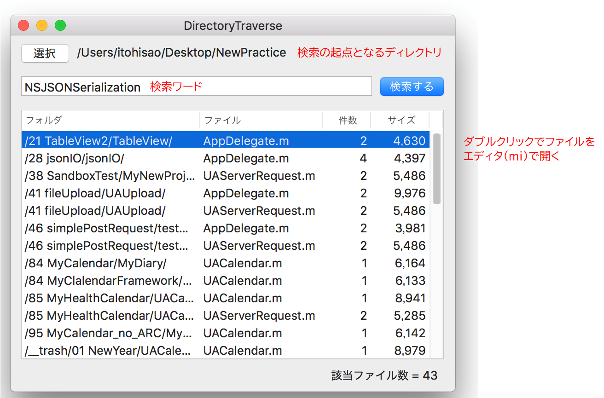
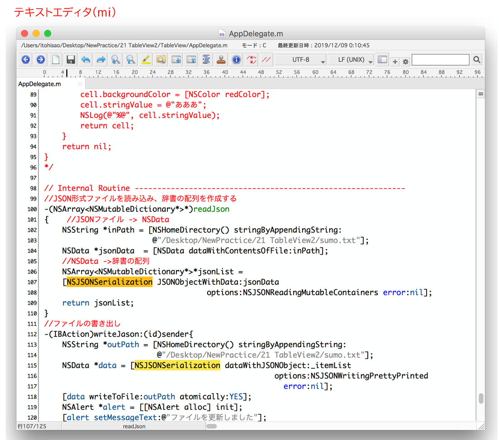
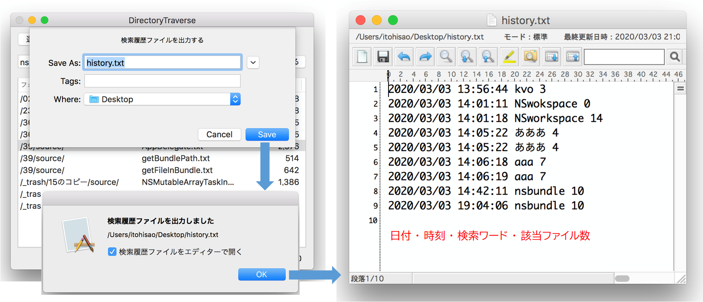

テキスト検索ツール
ディレクトリをトラバースするしながら全文検索する
サブディレクトリを含む特定のディレクトリ下のすべてのテキストファイルを検索し、キーワードに一致する文字列を持つファイルをリストに出力する。

画像をクリックすると動画が始まります
操作方法
選択ボタンで OpenPanelシートが開くので、検索の起点となるディレクトリを指定する。
検索ワードを入力して検索を行う。検索ワードの指定は一つのみ。大文字小文字の区別はしない。対象ファイルに対して全文検索を行い、マッチしたファイルがあれば、フォルダ名、ファイル名、ヒットした件数、ファイルサイズをテーブルビューに表示する。
ファイル名をダブルクリックすれば、ファイルがテキストエディタ（mi）で開く。

検索履歴の出力
検索の結果である「検索日時」「検索ワード」「ヒットしたファイル数」を履歴レコードとして NSUserDefaultsオブジェクトに保存している。
このデータはファイルに出力することができる。menu → History → 履歴の出力 を選ぶとSavePanelが表示されるので出力先のファイルを指定する。Saveを実行すると検索履歴がテキストファイルに出力される。

技法的トピックス
それぞれ独立した章があるのでそちらを参照のこと